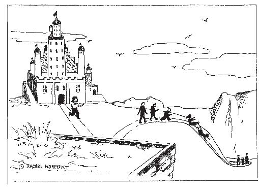

More than 35 years ago, in 1972, I had a dream in which my children and I are imprisoned in a strange tower surrounded by a fence and near an ocean. Having spent most of my life, including my childhood years, on college campuses, I associated “strange tower” with “ivory towers”— institutions of learning. But only much later, after studying the dream, did I understand why an “ivory tower” would be portrayed as a prison. In the dream...
...we are allowed outside for periods of time, but we always have to come back in. At times we have to hurry in to escape pursuit by fierce animals such as wild boars and wolves. Sometimes we have to climb the fence to get in to safety before being caught. We know we are being plotted against by an enemy, humans who control the wild beasts too. We feel it is just a matter of time before things will go from bad to worse

Tony Crisp, in Dream Dictionary, describes an enclosure in dreams as “the defenses we use, such as pride, beliefs, anger, to protect ourselves from deeply feeling the impact of the world, relationship, love, anxiety, or pain. These are often felt as traps or restraints, even though they are parts of our personality.” Wild beasts can represent emotional aspects or animal instincts that are uncontrolled and unpredictable.
In 1972 I was the 36-year-old mother of two young children living on a college campus where my husband was a professor. At that time, my beliefs probably came from at least three different sources: first, from my parents who impressed upon me a preferred pattern of behavior and set of beliefs; second, from teachers and other authority figures on both social and religious matter; third, from the present college community in which we lived with its own set of expectations for one’s behavior and activities. In the dream, we are caught in a double-trap between opposite dangers—wild beasts on the outside and our captors on the inside—and I was more fearful of what was outside than what was inside. I knew of no way out of confinement. Evidently, the beliefs that were instilled in me as I was growing up caused me to be fearful of what I found in the outside world, and at the time of this dream I felt overwhelmed. But I was conscious neither of feelings of confinement nor of the source of such feelings. The dream was trying to bring this matter into my awareness.
In a dream from 1995,
I’m trying to escape an institution. A woman to whom I appeal for help shows me, by example, a way to escape.
George Slater suggests in Bringing Dreams to Life that “images of public buildings, such as institutional... buildings... may refer to being trapped in collective thinking, where the individual is submerged by the institution. Inasmuch as they are man-made, they may refer to structures of a person’s own life experience that have been socially imposed.”
This dream revealed that on an unconscious level I was trying to leave a confining situation, to break away from constricting thoughts and beliefs that may have been imposed by the collective, as well as to call into existence my own set of beliefs and to allow my own individuality to blossom. It was definitely a time in my life in which I needed to get away from old assumptions and expectations of what was important and how I should behave. My conscious mind was very focused on the desire to move from the college community in which we had lived for thirty years.
I was already working on house plans for our retirement home in a new community.
This new dream pointed out that a woman, representing my nurturing, inner feminine, was assisting me. After I was diagnosed with breast cancer a year earlier, at least two of the doctors I consulted urged me to nurture myself as a part of my healing process. Although I didn’t understand it at the time, the dream revealed that I had begun the nurturing process. In Guided by Dreams: Breast Cancer, Dreams and Transformation, I recount how dreams guided various decisions I made during my treatment and recovery. In early 2008, after a passage of thirteen more years, my unconscious was still working on the matter of beliefs, as shown in the following dream:
My husband and I are in some building, almost like a castle. We find ourselves in a large area with many doors and many people. We, along with others, are trying to find our way out of this space. However, whenever we try to open a door, it appears to be locked. Occasionally someone seems to find a way out, but we can’t figure out how s/he does it. At some point my husband disappears and I have no idea where he has gone. I begin to feel desperate. I see someone over to one side who I sense may know “the secret” (to finding a way out of this confinement). She seems to be just hanging around as if she has some official role at this “amusement center.” I go over and almost beg for help, expressing my sense of despair and desperation. The woman smiles knowingly, but acknowledges she can’t tell me; I must figure out the solution for myself. She hints at something to do with buttons, maybe saying something simple and obvious. I don’t recall what this is. I go back to the “doors” and finally spot something, perhaps the buttons, that she might have been referring to. I try pushing one and, sure enough, a door opens to the outside. I hurry out, joining a crowd of people heading down a path leading from this high location. I can tell that at some distance down the path it appears to get terribly steep. I think I see people sliding swiftly down at that point. It looks dangerous, but obviously it is the only way to go.

I associate the castle situated on a high location with an archetypal storybook castle. I also think of the “ivory towers” that suggest to me institutions of learning and connect this dream to the earlier ones discussed above.
In this new dream, my husband and I find ourselves with many others in another confining place and we are trying to open the locked doors that will provide a way out. As in the earlier dream, I ask a woman (my inner feminine) for help. Although she offers a helpful hint, she says we must find the solution—the way out of confinement—for ourselves. So here is one more metaphoric dream showing my desire to escape the confines of thoughts and beliefs that are hindering my development. Evidently, I still need to figure out what these beliefs are.
I find the timing of the dream significant, since it came the night before my husband and I began participation in a study group on Eckhart Tolle’s book A New Earth. Tolle states that the book’s main purpose is to bring about a shift in consciousness to help us escape the collective dysfunction of the human mind, to transform the distortions of egoic human mind.
He writes,
“The change goes deeper than the content of your mind, deeper than your thoughts. In fact, at the heart of the new consciousness lies the transcendence of thought, the newfound ability of rising above thought, of realizing a dimension with yourself that is infinitely more vast than thought. We will come to realize that the ‘voice in my head’ is not who I am. I am the awareness that is prior to thought, the space in which the thought— or the emotion or sense of perception—happens.”
I note, in reflection on this last dream, that I termed the confining space an “amusement center.” We entertain ourselves constantly with our chattering thoughts. In the dream I “push the right button” and make it out to join others who have escaped. I need to figure out what “the right button” represents in waking life. Perhaps the very steep and seemingly dangerous descent we still must go down represents going down into our unconscious. In the dream this is the only way to completely get away from the confinement in the “castle.” Additional dreams can help me do this.
In a second dream the same night,
I am trying to find my way home from some meeting or conference. I have many “papers” with me as well as my pocketbook. I seem to be having trouble figuring out just where I am and which direction I should go. At some point where I have stopped, perhaps to rest/ sleep, I become alarmed when I realize my things have disappeared. I become frantic, fearing I won’t be able to find my way home without the papers and my pocketbook that contains my money and my identification. I’ll be stuck where I am. I’m relieved when someone helps me find/spot my pocketbook. At least I’ll have means to continue on my way.
I equate “home” with our place of origin to which we return at the end of our earthly life. I am trying to find my way there after attending meetings and/or conferences (all the places I go to try to receive guidance for my journey through life), but I am not sure “where I am and which direction I should go.” I fear the loss of my credentials and my money will prevent me from being able to continue on my way. I am relieved when someone helps me find what I thought was lost. This would seem to be a positive outcome; but is it? Perhaps I am too attached to my identification with my ego. Perhaps I still need to learn to let go. David Gordon would classify this as a Dream of Attachment, as he discusses in his book Mindful Dreaming. He and Tolle point out we need to let go of these kinds of attachments to allow something new to emerge in our life. Gordon, in an article about his book, states, “Dreams of Attachment and Letting Go prompt us to grieve and release our attachment to the causes of our suffering. In so doing we awaken—much like those who report near-death experiences—to a deeper contentment and fuller peace than we ever imagined.”
Several books I have been reading recently seem to tie all these ideas together. David Richo in The Five Things We Cannot Change... and the Happiness We Find by Embracing Them presents many of the same ideas, perhaps in a slightly different manner. He states,
“Paradoxically, an unconditional yes to who I am, how others are, and what the world is, places me in the best position to grow. We can say Yes! to participating in our own evolution and working toward our life purpose in three ways: by cultivating psychological health, spiritual maturity, and mystical oneness or spiritual awakening. These are not three levels that follow one another linearly; they stand as one integral whole. Each is complete only when it includes the other two. To integrate these three dimensions of ourselves is to combine sanity and sanctity.”
Dreamwork is one of the best ways we can say “Yes!” to participating in our own evolution and working toward our life purpose. Dreams can help us understand what is going on within ourselves—emotionally, psychologically, spiritually and physically.
My discussion so far has dealt with the dreams’ importance for me personally. Personal dreams can also have a message for the collective. In the third dream discussed above, my husband and I “find ourselves in a large area with many doors and many people. We, along with others, are trying to find our way out of this space.” This suggests that an awakening may be taking place among many people—many who have been trapped as I have been by confining beliefs and are trying to find their way out. The fact that thousands of people around the world have been studying Eckhart Tolle’s book by means of the Oprah webcast may be one concrete example.